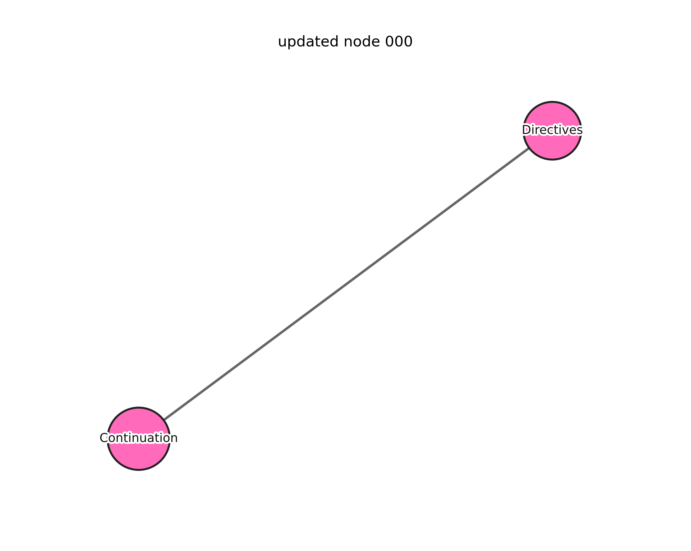

Demo
GoT Duplex: Conversational Behavior Reasoning
Demo
Interactive GoT Viewer (1s granularity)
Your browser does not support the audio element.
T
0
s
High-level
—
Low-level
—
Text
—
Raw · Weight matrix
Raw · Node graph
Updated · Weight matrix
Updated · Node graph
